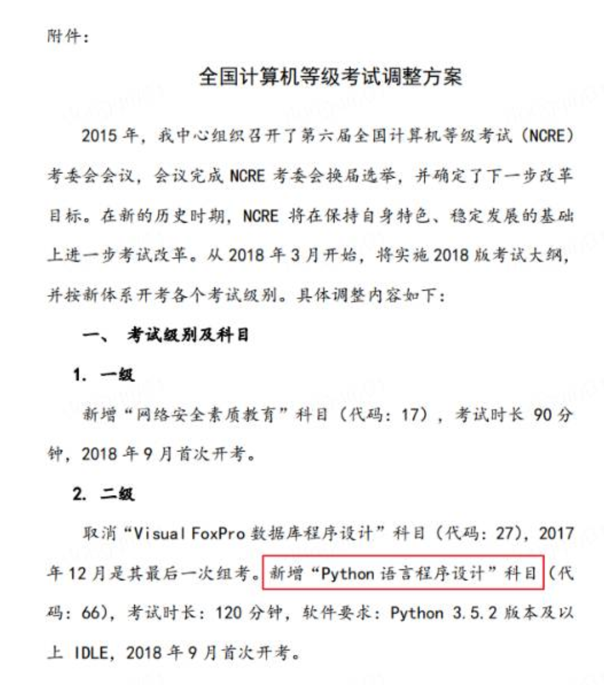
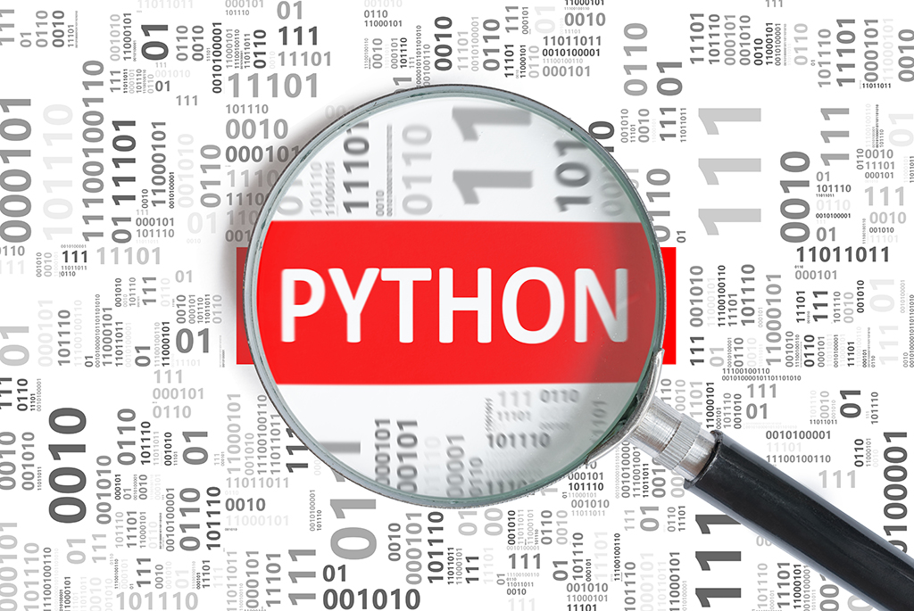

<!DOCTYPE html><html><head><meta charset="utf-8"><title>我的天，小学生都已经开始学Python了！十年后你还有工作么？ | 技术学派</title><meta name="viewport" content="width=device-width,initial-scale=1,maximum-scale=1"><meta name="keywords" content="IT培训, Python, 大数据, 人工智能, Web前端, PHP, python"><meta name="description" content="大家听到小学生学Python？这是在开玩笑的吧？小学生学Python干啥用？实际上，山东省最新出版的小学信息技术六年级教材已经加入了Python内容！真是教育从娃娃抓起啊，以后出去都不敢说自己不会Python了….除去给小学生的基础知识普及，高考居然也要考python！浙江省信息技术课程改革方案出台，Python确定进入浙江省信息技术高考，从2018年起浙江省信息技术教材编程语言将会从vb更换为P"><meta name="keywords" content="python"><meta property="og:type" content="article"><meta property="og:title" content="我的天，小学生都已经开始学Python了！十年后你还有工作么？"><meta property="og:url" content="http://www.JiShuXuePai.com/blog/学习答疑/学习答疑/我的天，小学生都已经开始学Python了！十年后你还有工作么？/index.html"><meta property="og:site_name" content="技术学派"><meta property="og:description" content="大家听到小学生学Python？这是在开玩笑的吧？小学生学Python干啥用？实际上，山东省最新出版的小学信息技术六年级教材已经加入了Python内容！真是教育从娃娃抓起啊，以后出去都不敢说自己不会Python了….除去给小学生的基础知识普及，高考居然也要考python！浙江省信息技术课程改革方案出台，Python确定进入浙江省信息技术高考，从2018年起浙江省信息技术教材编程语言将会从vb更换为P"><meta property="og:locale" content="zh-CN"><meta property="og:image" content="http://www.jishuxuepai.com/blog/学习答疑/学习答疑/我的天，小学生都已经开始学Python了！十年后你还有工作么？/boy.jpg"><meta property="og:updated_time" content="2018-05-14T06:59:20.000Z"><meta name="twitter:card" content="summary"><meta name="twitter:title" content="我的天，小学生都已经开始学Python了！十年后你还有工作么？"><meta name="twitter:description" content="大家听到小学生学Python？这是在开玩笑的吧？小学生学Python干啥用？实际上，山东省最新出版的小学信息技术六年级教材已经加入了Python内容！真是教育从娃娃抓起啊，以后出去都不敢说自己不会Python了….除去给小学生的基础知识普及，高考居然也要考python！浙江省信息技术课程改革方案出台，Python确定进入浙江省信息技术高考，从2018年起浙江省信息技术教材编程语言将会从vb更换为P"><meta name="twitter:image" content="http://www.jishuxuepai.com/blog/学习答疑/学习答疑/我的天，小学生都已经开始学Python了！十年后你还有工作么？/boy.jpg"><link rel="stylesheet" href="/libs/bootstrap/bootstrap-grid.css"><link rel="stylesheet" href="/libs/font-awesome/css/font-awesome.min.css"><link rel="stylesheet" href="/libs/titillium-web/styles.css"><link rel="stylesheet" href="/libs/source-code-pro/styles.css"><link rel="stylesheet" href="/css/style.css"><script src="/libs/jquery/jquery.min.js"></script><link rel="stylesheet" href="/libs/lightgallery/css/lightgallery.min.css"><link rel="stylesheet" href="/libs/justified-gallery/justifiedGallery.min.css"><script>var _hmt=_hmt||[];!function(){var e=document.createElement("script");e.src="//hm.baidu.com/hm.js?4c1bd812de3c30edbaa2b803c66f0a04";var t=document.getElementsByTagName("script")[0];t.parentNode.insertBefore(e,t)}()</script></head></html><body><div id="wrap"><header id="header"><div id="header-outer" class="outer"><div class="container"><div class="container-inner"><div id="header-title"><h1 class="logo-wrap"><a href="/" class="logo"></a></h1></div><div id="header-inner" class="nav-container"><a id="main-nav-toggle" class="nav-icon fa fa-bars">菜单</a><div class="nav-container-inner"><ul id="main-nav"><li class="main-nav-list-item"><a class="main-nav-list-link" href="/">主页</a></li><li class="main-nav-list-item"><a class="main-nav-list-link" href="/edu/index.html">学编程</a></li><li class="main-nav-list-item"><a class="main-nav-list-link" href="/blog/">博客</a></li><li class="main-nav-list-item"><a class="main-nav-list-link" href="/tips.html">学习建议</a></li><li class="main-nav-list-item"><a class="main-nav-list-link" href="/about.html">关于</a></li></ul><nav id="sub-nav"><div id="search-form-wrap"><form class="search-form"><input type="text" class="ins-search-input search-form-input" placeholder="搜索"> <button type="submit" class="search-form-submit"></button></form><div class="ins-search"><div class="ins-search-mask"></div><div class="ins-search-container"><div class="ins-input-wrapper"><input type="text" class="ins-search-input" placeholder="想要查找什么..."> <span class="ins-close ins-selectable"><i class="fa fa-times-circle"></i></span></div><div class="ins-section-wrapper"><div class="ins-section-container"></div></div></div></div><script>window.INSIGHT_CONFIG={TRANSLATION:{POSTS:"文章",PAGES:"页面",CATEGORIES:"分类",TAGS:"标签",UNTITLED:"(未命名)"},ROOT_URL:"/",CONTENT_URL:"/content.json"}</script><script src="/js/insight.js"></script></div></nav></div></div></div></div></div></header><div class="container"><div class="main-body container-inner"><div class="main-body-inner"><section id="main"><div class="main-body-header"><h1 class="header"><a class="page-title-link" href="/categories/学习答疑/">学习答疑</a><div class="author">张桐硕</div></h1></div><div class="main-body-content"><article id="post-学习答疑/我的天，小学生都已经开始学Python了！十年后你还有工作么？" class="article article-single article-type-post" itemscope itemprop="blogPost"><div class="article-inner"><header class="article-header"><h1 class="article-title" itemprop="name">我的天，小学生都已经开始学Python了！十年后你还有工作么？</h1></header><div class="article-meta"><div class="article-date"><a href="/blog/学习答疑/学习答疑/我的天，小学生都已经开始学Python了！十年后你还有工作么？/" class="article-date"><time datetime="2018-05-09T15:10:09.765Z" itemprop="datePublished">2018-05-09</time></a></div><div class="article-tag"><i class="fa fa-tag"></i> <a class="tag-link" href="/tags/python/">python</a></div></div><div class="article-entry" itemprop="articleBody"><h2 id="大家听到小学生学Python？这是在开玩笑的吧？小学生学Python干啥用？"><a href="#大家听到小学生学Python？这是在开玩笑的吧？小学生学Python干啥用？" class="headerlink" title="大家听到小学生学Python？这是在开玩笑的吧？小学生学Python干啥用？"></a>大家听到小学生学Python？这是在开玩笑的吧？小学生学Python干啥用？</h2><p>实际上，山东省最新出版的小学信息技术六年级教材已经加入了Python内容！真是教育从娃娃抓起啊，以后出去都不敢说自己不会Python了….</p><p>除去给小学生的基础知识普及，高考居然也要考python！浙江省信息技术课程改革方案出台，Python确定进入浙江省信息技术高考，从2018年起浙江省信息技术教材编程语言将会从vb更换为Python。</p><p>对于在校大学生来说，教育部考试中心于2017年10月11日发布了“关于全国计算机等级考试（NCRE）体系调整”的通知，决定自2018年3月起，在计算机二级考试加入了“Python语言程序设计”科目。<br></p><h2 id="可以看出，Python已成为最流行的语言之一。那Python语言为什么如此火爆呢？Python到底是何方神圣呢？"><a href="#可以看出，Python已成为最流行的语言之一。那Python语言为什么如此火爆呢？Python到底是何方神圣呢？" class="headerlink" title="可以看出，Python已成为最流行的语言之一。那Python语言为什么如此火爆呢？Python到底是何方神圣呢？"></a>可以看出，Python已成为最流行的语言之一。那Python语言为什么如此火爆呢？Python到底是何方神圣呢？</h2><p><br>Python是一种计算机程序设计语言，又被称为胶水语言，可以用混合编译的方式使用c/c++/java等语言的库。你可能已经听说过很多种流行的编程语言，比如在大学里感觉非常难学的C语言，进入社会非常流行的Java语言，以及适合初学者的Basic语言，非常适合网页编程的Java语言等，Python是他们其中的一种。</p><p>Python易于阅读和编写，所以经常被称为实用主义，就算是非程序员或开发人员也很容易上手。除此之外，Python还能够满足各种开发需求，为程序员提供了各种选择，如果你习惯了使用python，很容易从一个行业跳到另外一个行业，Python被广泛地用于系统运维、图形处理、数学处理、文本处理、数据库编程、网络编程、web编程、多媒体应用、pymo引擎、爬虫编写、人工智能等，加上人工智能（AI）的持续火热，Python作为通用开发语言，地位也是水涨船高。</p><p><br><a href="http://www.jishuxuepai.com/">了解更多</a></p></div><footer class="article-footer"><a data-url="http://www.JiShuXuePai.com/blog/学习答疑/学习答疑/我的天，小学生都已经开始学Python了！十年后你还有工作么？/" data-id="cjhr4tw37002uzifyooqfudtu" class="article-share-link"><i class="fa fa-share"></i>分享到</a><script>!function(n){n("body").on("click",function(){n(".article-share-box.on").removeClass("on")}).on("click",".article-share-link",function(t){t.stopPropagation();var e,a=n(this),o=a.attr("data-url"),r=encodeURIComponent(o),i="article-share-box-"+a.attr("data-id"),s=a.offset();if(n("#"+i).length){if((e=n("#"+i)).hasClass("on"))return void e.removeClass("on")}else{var l=['<div id="'+i+'" class="article-share-box">','<input class="article-share-input" value="'+o+'">','<div class="article-share-links">','<a href="https://twitter.com/intent/tweet?url='+r+'" class="article-share-twitter" target="_blank" title="Twitter"></a>','<a href="https://www.facebook.com/sharer.php?u='+r+'" class="article-share-facebook" target="_blank" title="Facebook"></a>','<a href="http://pinterest.com/pin/create/button/?url='+r+'" class="article-share-pinterest" target="_blank" title="Pinterest"></a>','<a href="https://plus.google.com/share?url='+r+'" class="article-share-google" target="_blank" title="Google+"></a>',"</div>","</div>"].join("");e=n(l),n("body").append(e)}n(".article-share-box.on").hide(),e.css({top:s.top+25,left:s.left}).addClass("on")}).on("click",".article-share-box",function(t){t.stopPropagation()}).on("click",".article-share-box-input",function(){n(this).select()}).on("click",".article-share-box-link",function(t){t.preventDefault(),t.stopPropagation(),window.open(this.href,"article-share-box-window-"+Date.now(),"width=500,height=450")})}(jQuery)</script></footer></div></article><section id="comments"><div id="gitalk_frame"></div></section></div></section><aside id="sidebar"><a class="sidebar-toggle" title="Expand Sidebar"><i class="toggle icon"></i></a><div class="sidebar-top"><p>关注我 :</p><ul class="social-links"><li><a class="social-tooltip" title="火星时代" href="http://edu.hxsd.com/edunew/topics/webfull/index.html" target="_blank"><i class="icon fa fa-dribbble"></i></a></li><li><a class="social-tooltip" title="weibo" href="#" target="_blank"><i class="icon fa fa-weibo"></i></a></li><li><a class="social-tooltip" title="rss" href="/atom.xml" target="_blank"><i class="icon fa fa-rss"></i></a></li></ul></div><nav id="article-nav"><a href="/blog/git/Git/git基础知识/" id="article-nav-newer" class="article-nav-link-wrap"><strong class="article-nav-caption">下一篇</strong><p class="article-nav-title">git 教学讲义</p><i class="icon fa fa-chevron-right" id="icon-chevron-right"></i> </a><a href="/blog/学习答疑/学习答疑/吐槽大会程序员版/" id="article-nav-older" class="article-nav-link-wrap"><strong class="article-nav-caption">上一篇</strong><p class="article-nav-title">吐槽大会(程序猿版)</p><i class="icon fa fa-chevron-left" id="icon-chevron-left"></i></a></nav><div class="widgets-container"><div class="widget-wrap widget-list"><h3 class="widget-title">分类</h3><div class="widget"><ul class="category-list"><li class="category-list-item"><a class="category-list-link" href="/categories/animate/">animate</a><span class="category-list-count">17</span></li><li class="category-list-item"><a class="category-list-link" href="/categories/git/">git</a><span class="category-list-count">1</span></li><li class="category-list-item"><a class="category-list-link" href="/categories/html/">html</a><span class="category-list-count">2</span></li><li class="category-list-item"><a class="category-list-link" href="/categories/js/">js</a><span class="category-list-count">5</span></li><li class="category-list-item"><a class="category-list-link" href="/categories/php/">php</a><span class="category-list-count">3</span></li><li class="category-list-item"><a class="category-list-link" href="/categories/vue/">vue</a><span class="category-list-count">1</span></li><li class="category-list-item"><a class="category-list-link" href="/categories/学习答疑/">学习答疑</a><span class="category-list-count">7</span></li><li class="category-list-item"><a class="category-list-link" href="/categories/插件资源库/">插件资源库</a><span class="category-list-count">3</span></li></ul></div></div><link rel="stylesheet" href="/css/tech/toc.css"><div class="widget-wrap widget-list widget-toc"><h3 class="widget-title">目录</h3><div class="widget"><div class="toc"></div><link rel="stylesheet" href="https://cdnjs.cloudflare.com/ajax/libs/tocbot/3.0.5/tocbot.css"><script src="https://cdnjs.cloudflare.com/ajax/libs/tocbot/3.0.5/tocbot.min.js"></script><script>$(function(){$(".main-body-content").find("h1,h2,h3").each(function(t){$(this).attr("id")||$(this).attr("id","list"+t)}),tocbot.init({tocSelector:".toc",contentSelector:".main-body-content",headingSelector:"h1, h2, h3",collapseDepth:2,positionFixedSelector:".widget-toc",fixedSidebarOffset:595,includeHtml:!1})})</script></div></div><div class="widget-wrap widget-list"><h3 class="widget-title">标签</h3><div class="widget"><ul class="tag-list"><li class="tag-list-item"><a class="tag-list-link" href="/tags/python/">python</a><span class="tag-list-count">4</span></li><li class="tag-list-item"><a class="tag-list-link" href="/tags/web前端/">web前端</a><span class="tag-list-count">2</span></li></ul></div></div><div class="widget-wrap widget-float"><h3 class="widget-title">标签云</h3><div class="widget tagcloud"><a href="/tags/python/" style="font-size:20px">python</a> <a href="/tags/web前端/" style="font-size:10px">web前端</a></div></div><div class="widget-wrap widget-list"><h3 class="widget-title">链接</h3><div class="widget"><ul><li><a href="http://edu.hxsd.com/edunew/topics/webfull/index.html">火星时代</a></li></ul></div></div></div></aside><script>$(function(){$(window).scroll(function(){240<=$(document).scrollTop()?($("#sidebar .sidebar-toggle").addClass("fix"),"block"==$("#sidebar .sidebar-toggle").css("display")&&$(".is-position-fixed").css("top","35px")):$("#sidebar .sidebar-toggle").removeClass("fix")})})</script></div></div></div><footer id="footer"><div class="top"><div class="inner"><div class="list"><div class="left clearfix"><dl><dt>关于我们</dt><dd><a href="/about.html" target="_blank">公司简介</a></dd><dd><a href="edu/index.html" target="_blank">联系我们</a></dd></dl><dl><dt>校区攻略</dt><dd><a href="edu/index.html" target="_blank">校区环境</a></dd><dd><a href="edu/index.html" target="_blank">住宿攻略</a></dd><dd><a href="edu/index.html" target="_blank">来校路线</a></dd></dl><dl><dt>课程培训</dt><dd><a href="edu/python.html" target="_blank">Python</a></dd><dd><a href="edu/python.html" target="_blank">Web前端</a></dd><dd><a href="edu/python.html" target="_blank">PHP</a></dd><dd><a href="edu/python.html" target="_blank">人工智能</a></dd><dd><a href="edu/python.html" target="_blank">大数据</a></dd></dl><dl><dt>常见问答</dt><dd><a href="edu/index.html" target="_blank">学费学时</a></dd><dd><a href="edu/index.html" target="_blank">学习方法</a></dd></dl></div></div><div class="tel"><tel>176-0025-8815</tel><span>北京市海淀区杏石口路81号火星时代大厦</span></div><div class="weixin"><div class="w1"> <span>头条号</span></div><div class="w1"> <span>官方微信</span></div></div></div></div><div class="bot">Copyright 2018 技术学派 京ICP备15015508号-3</div></footer><link rel="stylesheet" href="https://unpkg.com/gitalk/dist/gitalk.css"><script src="https://unpkg.com/gitalk/dist/gitalk.min.js"></script><script>var gitalk=new Gitalk({clientID:"2fbbb9980b49019d99a7",clientSecret:"152dd10e83ef6595761ea2185304f9ac8263573f",repo:"jsxp",owner:"li-kang",admin:["li-kang"]});gitalk.render("gitalk_frame")</script><script src="/libs/lightgallery/js/lightgallery.min.js"></script><script src="/libs/lightgallery/js/lg-thumbnail.min.js"></script><script src="/libs/lightgallery/js/lg-pager.min.js"></script><script src="/libs/lightgallery/js/lg-autoplay.min.js"></script><script src="/libs/lightgallery/js/lg-fullscreen.min.js"></script><script src="/libs/lightgallery/js/lg-zoom.min.js"></script><script src="/libs/lightgallery/js/lg-hash.min.js"></script><script src="/libs/lightgallery/js/lg-share.min.js"></script><script src="/libs/lightgallery/js/lg-video.min.js"></script><script src="/libs/justified-gallery/jquery.justifiedGallery.min.js"></script><script src="/js/main.js"></script></div></body>